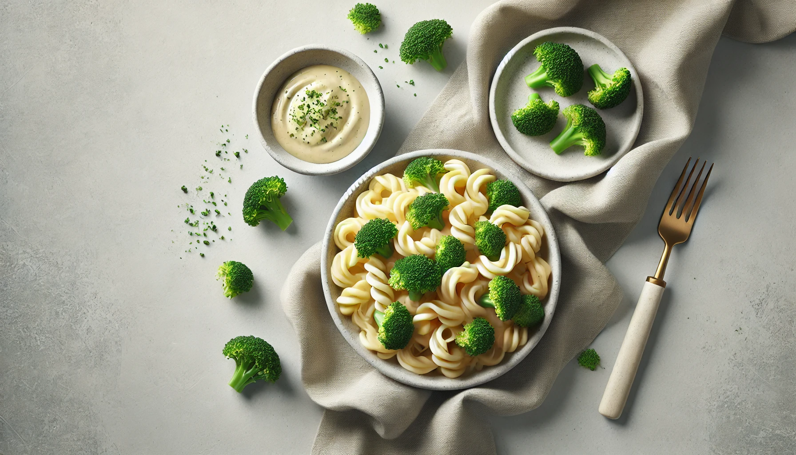
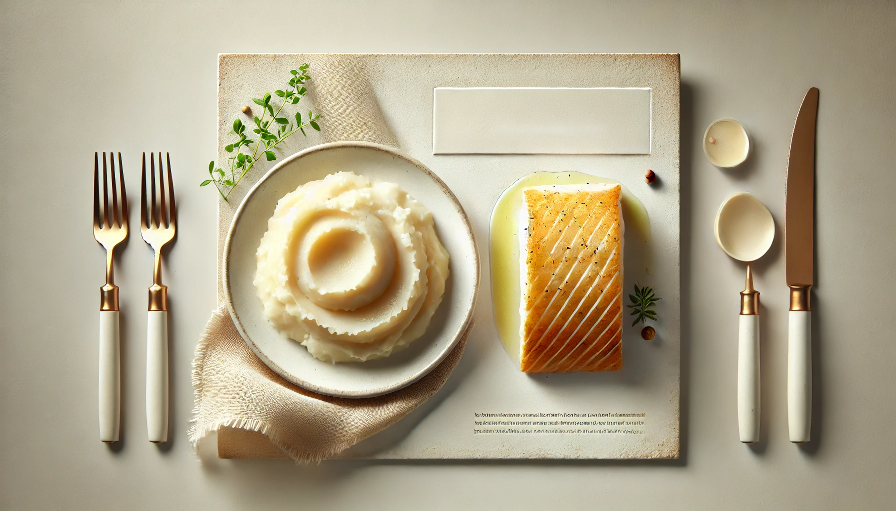
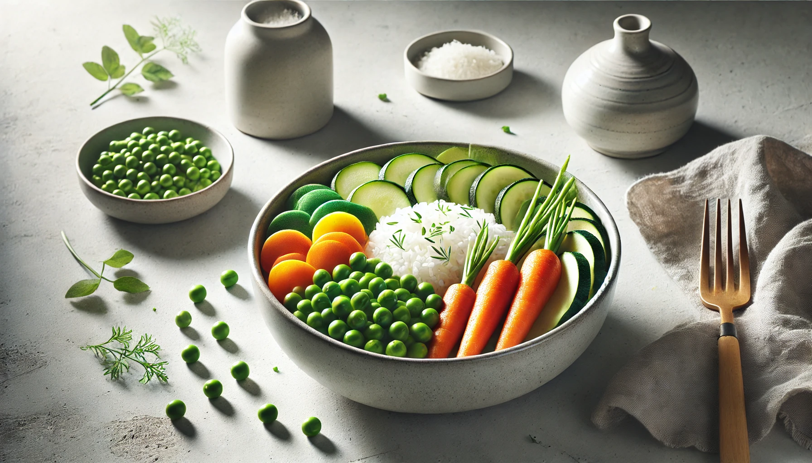
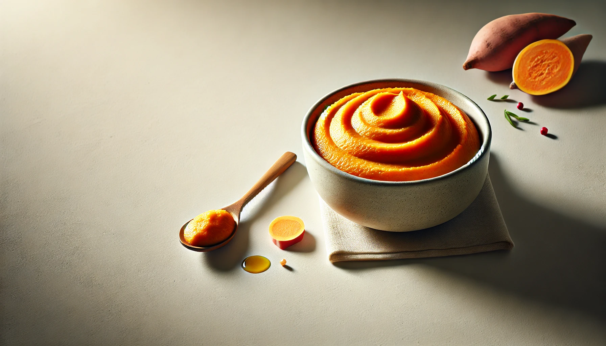
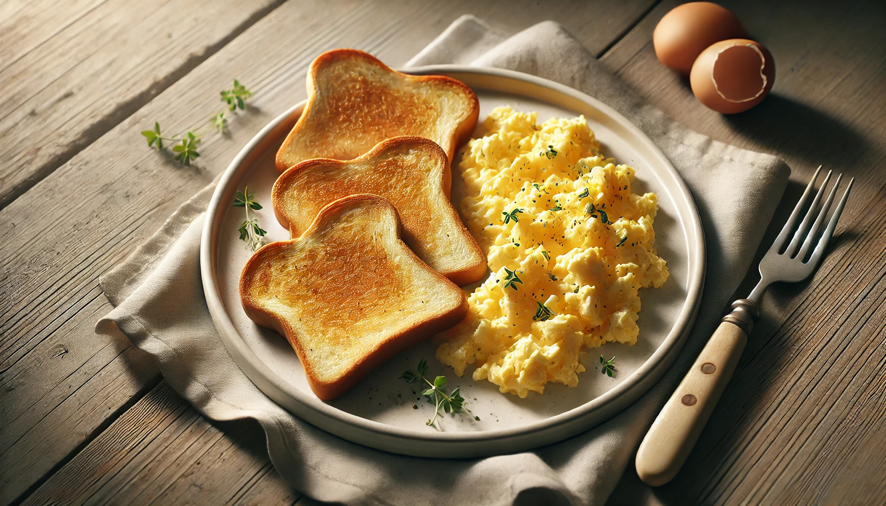
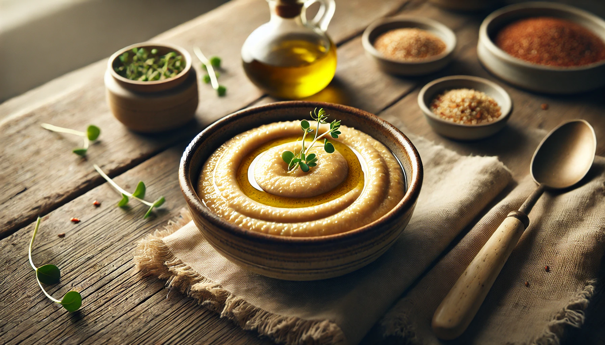
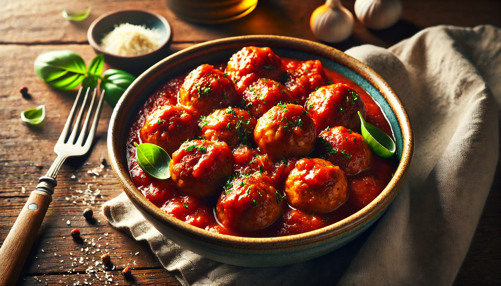

4-Week Toddler Lunch Plan
Week 4 | Balanced Bites & Family-Friendly Flavors
In this final week, we focus on meals that toddlers can enjoy with the whole family - soft, safe, and full of variety.

Lunch Recipe
Creamy Broccoli Pasta
Gentle on little tummies with a smooth veggie sauce.
Ingredients
¼ cup cooked small pasta
¼ cup steamed broccoli florets
1 tbsp cream cheese or plain yogurt
Instructions
1. Blend broccoli and cream cheese until smooth.
2. Stir into warm pasta.
3. Serve slightly cooled.

Lunch Recipe
Fish & Potato Cakes
Soft, flavorful, and rich in omega-3s.
Ingredients
¼ cup cooked flaked fish (like cod or salmon, bones removed)
½ small boiled potato (mashed)
1 tsp chopped parsley (optional)
Instructions
1. Combine ingredients and form into small patties.
2. Pan-fry in olive oil until golden on both sides.
3. Let cool before serving.

Lunch Recipe
Veggie Fried Rice | Soft
Colorful, tasty, and easy to eat.
Ingredients
¼ cup cooked soft rice
1 tbsp finely chopped vegetables (carrot, peas, zucchini)
1 tsp olive oil
Pinch of turmeric (optional)
Instructions
1. Lightly sauté veggies in oil.
2. Add rice and turmeric. Stir well and cook until warm.
3. Serve soft and slightly cooled.

Lunch Recipe
Soft Turkey & Sweet Potato Bowl
A gentle and hearty bowl that’s easy to mash.
Ingredients
¼ cup cooked minced turkey
¼ cup mashed sweet potato
Dash of low-sodium broth or water
Instructions
1. Warm turkey in broth or water until moist.
2. Mix with mashed sweet potato and serve.

Lunch Recipe
Scrambled Egg with Soft Toast Fingers
A protein-rich finger food favorite.
Ingredients
1 egg
1 tsp milk or water
1 small slice soft bread (crust removed)
Instructions
1. Whisk egg with milk and scramble on low heat.
2. Cut toast into fingers. Serve alongside cooled eggs.

Lunch Recipe
Quinoa & Veggie Mash
A soft, slightly nutty mash with great nutrients.
Ingredients
2 tbsp cooked quinoa
2 tbsp steamed veggies (e.g., pumpkin, carrot, spinach)
1 tsp olive oil
Instructions
1. Mash or blend all ingredients until soft and combined.
1. Let cool and serve.

Lunch Recipe
Mini Meatballs with Tomato Sauce
Tiny, tender meatballs in a sweet homemade sauce.
Ingredients
¼ cup ground beef or turkey
1 tsp breadcrumbs
2 tbsp tomato purée (no added salt or sugar)
½ tsp oregano (optional)
Instructions
1. Mix meat and breadcrumbs.
2.Form mini meatballs.
3. Cook in a pan until browned.
4. Add tomato purée and oregano. Simmer until fully cooked.
5. Serve with soft pasta or mashed veggies.
Week 1 ☛ Here